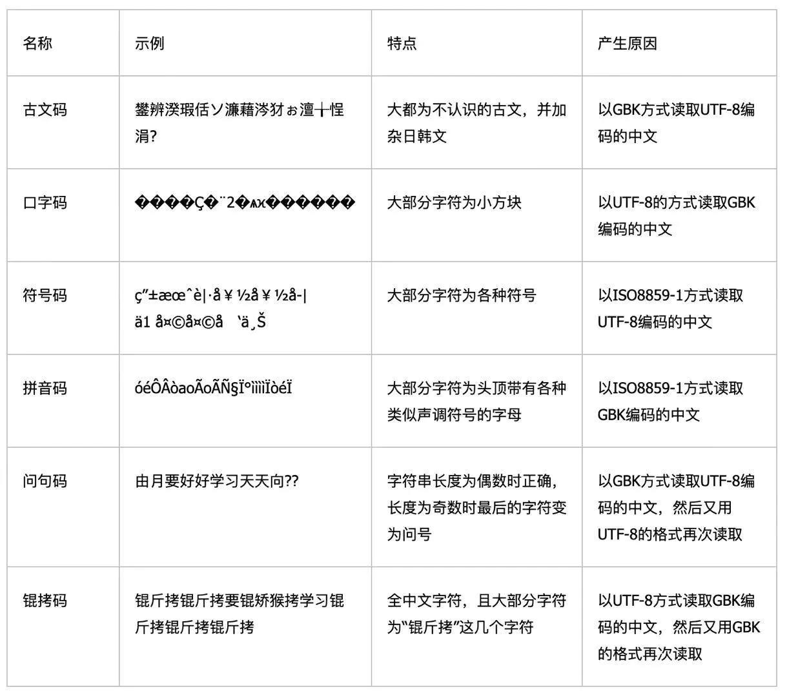

<!DOCTYPE lake>
<h2 data-lake-id="rwOvK" data-lake-index-type="2" id="rwOvK"><span data-lake-id="u91cdf38b" id="u91cdf38b">文件I/O简介</span></h2><ul list="uc02e6147"><li data-lake-id="u7f1ac699" fid="ubea82417" id="u7f1ac699"><span data-lake-id="u5285d8d0" id="u5285d8d0">IO是两个单词的缩写，分别是Input和Output，输入和输出</span></li><li data-lake-id="ue2d5fd32" fid="ubea82417" id="ue2d5fd32"><span data-lake-id="uec7fdde3" id="uec7fdde3">IO包含控制台IO以及文件IO</span></li></ul><p data-lake-id="u7a32d323" id="u7a32d323"><strong><span data-lake-id="u59618aca" id="u59618aca">文件I/O的基本流程</span></strong></p><ul list="u3270f614"><li data-lake-id="uca898cd1" fid="u9af2eea4" id="uca898cd1"><span data-lake-id="u8de79d46" id="u8de79d46">打开文件</span></li><li data-lake-id="u678dcdf5" fid="u9af2eea4" id="u678dcdf5"><span data-lake-id="u70b6b343" id="u70b6b343">文件读写</span></li><li data-lake-id="uef2758f0" fid="u9af2eea4" id="uef2758f0"><span data-lake-id="u53bda9a8" id="u53bda9a8">关闭文件</span></li></ul><h2 data-lake-id="Umv5F" data-lake-index-type="2" id="Umv5F"><span data-lake-id="u2554a18e" id="u2554a18e">打开文件</span></h2><p data-lake-id="u6258e875" id="u6258e875"><span data-lake-id="u1c2f3d9b" id="u1c2f3d9b">使用open函数，可以打开一个已经存在的文件，或者创建一个新文件</span></p><span class="yuque-card-unsupported">[codeblock]</span><p data-lake-id="u14c19723" id="u14c19723"><span data-lake-id="u57e1306f" id="u57e1306f">访问模式对应的功能如下:</span></p><table class="lake-table" data-lake-id="fFbaD" id="fFbaD" margin="true" style="width: 749px"><colgroup><col width="107"/><col width="107"/><col width="107"/><col width="107"/><col width="107"/><col width="107"/><col width="107"/></colgroup><tbody><tr data-lake-id="ue066e52f" id="ue066e52f"><td data-lake-id="ub61a509f" id="ub61a509f"><p data-lake-id="u327cf3dc" id="u327cf3dc" style="text-align: center"><strong><span data-lake-id="u422c97d4" id="u422c97d4">功能</span></strong></p></td><td data-lake-id="uc25aec5f" id="uc25aec5f"><p data-lake-id="ua00d85b8" id="ua00d85b8" style="text-align: center"><strong><span data-lake-id="u6d71e00d" id="u6d71e00d">r</span></strong></p></td><td data-lake-id="ub30657c2" id="ub30657c2"><p data-lake-id="u650441e6" id="u650441e6" style="text-align: center"><strong><span data-lake-id="u959e515b" id="u959e515b">r+</span></strong></p></td><td data-lake-id="u69df4886" id="u69df4886"><p data-lake-id="u46c7a8e0" id="u46c7a8e0" style="text-align: center"><strong><span data-lake-id="uf45c1790" id="uf45c1790">w</span></strong></p></td><td data-lake-id="u6ddc5930" id="u6ddc5930"><p data-lake-id="ucb8669cc" id="ucb8669cc" style="text-align: center"><strong><span data-lake-id="ue0faedf2" id="ue0faedf2">w+</span></strong></p></td><td data-lake-id="udb6d9dac" id="udb6d9dac"><p data-lake-id="u4cb86b19" id="u4cb86b19" style="text-align: center"><strong><span data-lake-id="u203edb2c" id="u203edb2c">a</span></strong></p></td><td data-lake-id="u7ef6545c" id="u7ef6545c"><p data-lake-id="ue300a881" id="ue300a881" style="text-align: center"><strong><span data-lake-id="uda66c087" id="uda66c087">a+</span></strong></p></td></tr><tr data-lake-id="u6133e240" id="u6133e240"><td data-lake-id="u32ffec8b" id="u32ffec8b"><p data-lake-id="u9e4f95ac" id="u9e4f95ac" style="text-align: center"><span data-lake-id="u0ea96930" id="u0ea96930">读</span></p></td><td data-lake-id="u5bc5962b" id="u5bc5962b"><p data-lake-id="u87b21023" id="u87b21023" style="text-align: center"><span data-lake-id="ud58851e6" id="ud58851e6">+</span></p></td><td data-lake-id="u9df02337" id="u9df02337"><p data-lake-id="uf82ed5fe" id="uf82ed5fe" style="text-align: center"><span data-lake-id="uf4b575e4" id="uf4b575e4">+</span></p></td><td data-lake-id="ua58f7779" id="ua58f7779"><p data-lake-id="u61ca8065" id="u61ca8065" style="text-align: center"><br/></p></td><td data-lake-id="ue8f78f4e" id="ue8f78f4e"><p data-lake-id="ua1f07304" id="ua1f07304" style="text-align: center"><span data-lake-id="u373e7bb6" id="u373e7bb6">+</span></p></td><td data-lake-id="udb6d0238" id="udb6d0238"><p data-lake-id="u31b04a41" id="u31b04a41"><br/></p></td><td data-lake-id="ubc1284b6" id="ubc1284b6"><p data-lake-id="u78fccbba" id="u78fccbba" style="text-align: center"><span data-lake-id="u6967f512" id="u6967f512">+</span></p></td></tr><tr data-lake-id="uf32346c7" id="uf32346c7"><td data-lake-id="u1b63ca44" id="u1b63ca44"><p data-lake-id="u8338eedc" id="u8338eedc" style="text-align: center"><span data-lake-id="u93af7631" id="u93af7631">写</span></p></td><td data-lake-id="u977ec051" id="u977ec051"><p data-lake-id="u3fdb9c6c" id="u3fdb9c6c" style="text-align: center"><br/></p></td><td data-lake-id="u8d011b33" id="u8d011b33"><p data-lake-id="u0a7ba970" id="u0a7ba970" style="text-align: center"><span data-lake-id="u9b6f161b" id="u9b6f161b">+</span></p></td><td data-lake-id="ube18e71c" id="ube18e71c"><p data-lake-id="uca50377d" id="uca50377d" style="text-align: center"><span data-lake-id="u133f250d" id="u133f250d">+</span></p></td><td data-lake-id="u291f79d9" id="u291f79d9"><p data-lake-id="u2e622c94" id="u2e622c94" style="text-align: center"><span data-lake-id="uddcbc3c6" id="uddcbc3c6">+</span></p></td><td data-lake-id="ua119dae4" id="ua119dae4"><p data-lake-id="udd3f7e2d" id="udd3f7e2d" style="text-align: center"><span data-lake-id="ub5e6f453" id="ub5e6f453">+</span></p></td><td data-lake-id="u45d956f5" id="u45d956f5"><p data-lake-id="u578556ab" id="u578556ab" style="text-align: center"><span data-lake-id="u590640b0" id="u590640b0">+</span></p></td></tr><tr data-lake-id="u84b1dba5" id="u84b1dba5"><td data-lake-id="u16bcfcc8" id="u16bcfcc8"><p data-lake-id="ude2640cd" id="ude2640cd" style="text-align: center"><span data-lake-id="u7162bd9d" id="u7162bd9d">创建</span></p></td><td data-lake-id="u3c56fe1d" id="u3c56fe1d"><p data-lake-id="u39f5a759" id="u39f5a759" style="text-align: center"><br/></p></td><td data-lake-id="uee8125e3" id="uee8125e3"><p data-lake-id="ue019ea3f" id="ue019ea3f" style="text-align: center"><br/></p></td><td data-lake-id="u426e3d7e" id="u426e3d7e"><p data-lake-id="ued984bde" id="ued984bde" style="text-align: center"><span data-lake-id="ud9942a7e" id="ud9942a7e">+</span></p></td><td data-lake-id="u7e5676ee" id="u7e5676ee"><p data-lake-id="u165c6e38" id="u165c6e38" style="text-align: center"><span data-lake-id="u5bd05eb8" id="u5bd05eb8">+</span></p></td><td data-lake-id="uf71c9fc7" id="uf71c9fc7"><p data-lake-id="u193b8c5a" id="u193b8c5a" style="text-align: center"><span data-lake-id="uebbe77cf" id="uebbe77cf">+</span></p></td><td data-lake-id="u05df4203" id="u05df4203"><p data-lake-id="u9bf721d9" id="u9bf721d9" style="text-align: center"><span data-lake-id="u191dbb4a" id="u191dbb4a">+</span></p></td></tr><tr data-lake-id="u776514b4" id="u776514b4"><td data-lake-id="ue57bae96" id="ue57bae96"><p data-lake-id="u20557e7b" id="u20557e7b" style="text-align: center"><span data-lake-id="u84916154" id="u84916154">覆盖</span></p></td><td data-lake-id="u7bf7bbfb" id="u7bf7bbfb"><p data-lake-id="uaee9ca07" id="uaee9ca07" style="text-align: center"><br/></p></td><td data-lake-id="u666a08fb" id="u666a08fb"><p data-lake-id="uad4d8a76" id="uad4d8a76" style="text-align: center"><br/></p></td><td data-lake-id="u06df5fbe" id="u06df5fbe"><p data-lake-id="u2ac2a0ea" id="u2ac2a0ea" style="text-align: center"><span data-lake-id="u0c21ee93" id="u0c21ee93">+</span></p></td><td data-lake-id="u7a3667bd" id="u7a3667bd"><p data-lake-id="ufa66bdde" id="ufa66bdde" style="text-align: center"><span data-lake-id="ufc655078" id="ufc655078">+</span></p></td><td data-lake-id="u93d9f69f" id="u93d9f69f"><p data-lake-id="uc131eab4" id="uc131eab4" style="text-align: center"><br/></p></td><td data-lake-id="ucf323a71" id="ucf323a71"><p data-lake-id="uc6364b62" id="uc6364b62" style="text-align: center"><br/></p></td></tr><tr data-lake-id="u8980787c" id="u8980787c"><td data-lake-id="uf621a13e" id="uf621a13e"><p data-lake-id="u0ffbd021" id="u0ffbd021" style="text-align: center"><span data-lake-id="ucf69c811" id="ucf69c811">指针在开始</span></p></td><td data-lake-id="ud03af00d" id="ud03af00d"><p data-lake-id="u9fe29918" id="u9fe29918" style="text-align: center"><span data-lake-id="uc7e5293b" id="uc7e5293b">+</span></p></td><td data-lake-id="u3b75a18f" id="u3b75a18f"><p data-lake-id="u0cd11f52" id="u0cd11f52" style="text-align: center"><span data-lake-id="ube2c3727" id="ube2c3727">+</span></p></td><td data-lake-id="u2d3590b7" id="u2d3590b7"><p data-lake-id="u8574a140" id="u8574a140" style="text-align: center"><span data-lake-id="ub5b7122f" id="ub5b7122f">+</span></p></td><td data-lake-id="u7a938908" id="u7a938908"><p data-lake-id="ue6993c0f" id="ue6993c0f" style="text-align: center"><span data-lake-id="u1f5d2c15" id="u1f5d2c15">+</span></p></td><td data-lake-id="u7468b7ea" id="u7468b7ea"><p data-lake-id="u5c30c2d7" id="u5c30c2d7" style="text-align: center"><br/></p></td><td data-lake-id="ub073a5ee" id="ub073a5ee"><p data-lake-id="u480e9e74" id="u480e9e74" style="text-align: center"><br/></p></td></tr><tr data-lake-id="ud5b0eb46" id="ud5b0eb46"><td data-lake-id="u25ae5124" id="u25ae5124"><p data-lake-id="u5331f2a5" id="u5331f2a5" style="text-align: center"><span data-lake-id="u91d174cc" id="u91d174cc">指针在结尾</span></p></td><td data-lake-id="u5d42ac48" id="u5d42ac48"><p data-lake-id="u6551ef53" id="u6551ef53" style="text-align: center"><br/></p></td><td data-lake-id="u41ff0c5c" id="u41ff0c5c"><p data-lake-id="u09d6d8ed" id="u09d6d8ed" style="text-align: center"><br/></p></td><td data-lake-id="u997180b2" id="u997180b2"><p data-lake-id="u6cccee46" id="u6cccee46" style="text-align: center"><br/></p></td><td data-lake-id="u6c3f7001" id="u6c3f7001"><p data-lake-id="ub7ef752d" id="ub7ef752d" style="text-align: center"><br/></p></td><td data-lake-id="uf29cfdc4" id="uf29cfdc4"><p data-lake-id="u9c4cd069" id="u9c4cd069" style="text-align: center"><span data-lake-id="ud0adccc1" id="ud0adccc1">+</span></p></td><td data-lake-id="u5c63a60c" id="u5c63a60c"><p data-lake-id="u61c15733" id="u61c15733" style="text-align: center"><span data-lake-id="ufdb71488" id="ufdb71488">+</span></p></td></tr></tbody></table><p data-lake-id="uee6a2c75" id="uee6a2c75"><span data-lake-id="u25996532" id="u25996532">打开文件</span></p><span class="yuque-card-unsupported">[codeblock]</span><p data-lake-id="u84e8b570" id="u84e8b570"><span data-lake-id="u9139dddc" id="u9139dddc">如果没有传入打开模式,默认访问模式为</span><span data-lake-id="u8edcb6df" id="u8edcb6df">r</span><span data-lake-id="ubf78cca8" id="ubf78cca8">只读模式</span></p><h2 data-lake-id="jH19n" data-lake-index-type="2" id="jH19n"><span data-lake-id="u118de5a0" id="u118de5a0">关闭文件</span></h2><p data-lake-id="u103fcd38" id="u103fcd38"><span data-lake-id="u224a16dc" id="u224a16dc">读取或写出文件后，要使用</span><code data-lake-id="u90a21ffa" id="u90a21ffa"><span data-lake-id="u0a6b9f56" id="u0a6b9f56">close()</span></code><span data-lake-id="uc32643d5" id="uc32643d5">方法关闭文件</span></p><span class="yuque-card-unsupported">[codeblock]</span><p data-lake-id="uc5ef45c1" id="uc5ef45c1"><span data-lake-id="uf2cbf2c9" id="uf2cbf2c9">注意:</span></p><p data-lake-id="uadbaa1f0" id="uadbaa1f0"><span data-lake-id="u302f8a39" id="u302f8a39">一定要保证文件操作完之后要关闭掉，因为程序能打开的文件数量是有上限的，并且不关闭文件会造成内存泄漏</span></p><h2 data-lake-id="SnwtG" data-lake-index-type="2" id="SnwtG"><span data-lake-id="uadd9b414" id="uadd9b414">文件读取</span></h2><h3 data-lake-id="IUEmX" data-lake-index-type="2" id="IUEmX"><span data-lake-id="u0b2a59c3" id="u0b2a59c3">read</span></h3><p data-lake-id="ua3e63b3f" id="ua3e63b3f"><code data-lake-id="u50462b46" id="u50462b46"><span data-lake-id="u39c5c555" id="u39c5c555">read</span></code><span data-lake-id="u205b8509" id="u205b8509">方法读取，格式为:</span></p><span class="yuque-card-unsupported">[codeblock]</span><p data-lake-id="u6b937081" id="u6b937081"><span data-lake-id="ue51fa648" id="ue51fa648">读取整个文件内容</span></p><span class="yuque-card-unsupported">[codeblock]</span><p data-lake-id="u40b341a5" id="u40b341a5"><span data-lake-id="u962d2402" id="u962d2402">读取5个数据</span></p><span class="yuque-card-unsupported">[codeblock]</span><h3 data-lake-id="BL32m" data-lake-index-type="2" id="BL32m"><span data-lake-id="ud682b1cc" id="ud682b1cc">readline</span></h3><p data-lake-id="u7afb5761" id="u7afb5761"><code data-lake-id="uee2063c2" id="uee2063c2"><span data-lake-id="u2062b680" id="u2062b680">readline</span></code><span data-lake-id="uba17186c" id="uba17186c">指的是读取一行</span></p><span class="yuque-card-unsupported">[codeblock]</span><p data-lake-id="u4ac70bd4" id="u4ac70bd4"><span data-lake-id="uddbaffb9" id="uddbaffb9">也可以指定读取一行的</span><code data-lake-id="u2696ba6a" id="u2696ba6a"><span data-lake-id="u02fe4d7d" id="u02fe4d7d">n</span></code><span data-lake-id="u66af0874" id="u66af0874">个字符的数据</span></p><span class="yuque-card-unsupported">[codeblock]</span><h3 data-lake-id="vJrAJ" data-lake-index-type="2" id="vJrAJ"><span data-lake-id="u6455e925" id="u6455e925">readlines</span></h3><p data-lake-id="u2e036831" id="u2e036831"><code data-lake-id="u722bae37" id="u722bae37"><span data-lake-id="ua37cbdef" id="ua37cbdef">readlines</span></code><span data-lake-id="u7cc2adaf" id="u7cc2adaf">指的是读取整个文件,返回每一行数据的列表</span></p><span class="yuque-card-unsupported">[codeblock]</span><h2 data-lake-id="Za1fH" data-lake-index-type="2" id="Za1fH"><span data-lake-id="u578079f9" id="u578079f9">文件写入</span></h2><h3 data-lake-id="RXL5c" data-lake-index-type="2" id="RXL5c"><span data-lake-id="uc0e8ee1b" id="uc0e8ee1b">write</span></h3><p data-lake-id="u7846f7d4" id="u7846f7d4"><code data-lake-id="ub45bdc9a" id="ub45bdc9a"><span data-lake-id="ud991a383" id="ud991a383">write</span></code><span data-lake-id="u95d9450f" id="u95d9450f">写入字符串到文件中</span></p><span class="yuque-card-unsupported">[codeblock]</span><h3 data-lake-id="gHfN6" data-lake-index-type="2" id="gHfN6"><span data-lake-id="u82cf4c6c" id="u82cf4c6c">writelines</span></h3><p data-lake-id="u7258a524" id="u7258a524"><code data-lake-id="u2753ec35" id="u2753ec35"><span data-lake-id="u3af9811f" id="u3af9811f">writelines</span></code><span data-lake-id="ud82be922" id="ud82be922">可以将容器中数据写入到文件中</span></p><span class="yuque-card-unsupported">[codeblock]</span><h2 data-lake-id="LZdjZ" data-lake-index-type="2" id="LZdjZ"><span data-lake-id="u0d65ddab" id="u0d65ddab">使用with</span></h2><p data-lake-id="ub0ccecfe" id="ub0ccecfe"><span data-lake-id="u0823aab7" id="u0823aab7">在处理文件对象时，最好使用 </span><code data-lake-id="ucf3e972e" id="ucf3e972e"><span data-lake-id="u0174aac9" id="u0174aac9">with</span></code><span data-lake-id="uce9ee62e" id="uce9ee62e"> 关键字。优点是，子句体结束后，文件会正确关闭，即便触发异常也可以。而且，使用 </span><code data-lake-id="ub98b6015" id="ub98b6015"><span data-lake-id="u7a6acc1b" id="u7a6acc1b">with</span></code><span data-lake-id="u93f4becd" id="u93f4becd"> 相比等效的 </span><code data-lake-id="ufe712220" id="ufe712220"><span data-lake-id="ua503693a" id="ua503693a">try-finally</span></code><span data-lake-id="u3d2b2730" id="u3d2b2730"> 代码块要简短得多：</span></p><span class="yuque-card-unsupported">[codeblock]</span><p data-lake-id="u6c17a76e" id="u6c17a76e"><span data-lake-id="u6d21028d" id="u6d21028d">我们可以通过如下代码验证文件是否已经关闭：</span></p><span class="yuque-card-unsupported">[codeblock]</span><p data-lake-id="ubdc27aae" id="ubdc27aae"><span data-lake-id="uc57827d6" id="uc57827d6">如果没有使用 </span><code data-lake-id="uf52fab46" id="uf52fab46"><span data-lake-id="u6533aafc" id="u6533aafc">with</span></code><span data-lake-id="ua4ea0801" id="ua4ea0801"> 关键字，则应调用 </span><code data-lake-id="udbfdb420" id="udbfdb420"><span data-lake-id="u90cc5ba1" id="u90cc5ba1">f.close()</span></code><span data-lake-id="u8bb9cf2c" id="u8bb9cf2c"> 关闭文件，即可释放文件占用的系统资源。</span></p><p data-lake-id="uc05ac05d" id="uc05ac05d"><span data-lake-id="ue70d9751" id="ue70d9751">​</span><br/></p><blockquote class="lake-alert lake-alert-color4" data-lake-id="u08d34690" id="u08d34690"><p data-lake-id="u9afdc394" id="u9afdc394"><strong><span data-lake-id="u02e2953c" id="u02e2953c">警告：</span></strong><span data-lake-id="uc8720262" id="uc8720262"> 调用 </span><code data-lake-id="ufed1e5c1" id="ufed1e5c1"><span data-lake-id="ud3623a9f" id="ud3623a9f">f.write()</span></code><span data-lake-id="u51bdc1c3" id="u51bdc1c3"> 时，未使用 </span><code data-lake-id="u9f620295" id="u9f620295"><span data-lake-id="ud903e499" id="ud903e499">with</span></code><span data-lake-id="u39f2f78b" id="u39f2f78b"> 关键字，或未调用 </span><code data-lake-id="uac36b8fe" id="uac36b8fe"><span data-lake-id="uf0b1a30e" id="uf0b1a30e">f.close()</span></code><span data-lake-id="u88f7fbe9" id="u88f7fbe9">，即使程序正常退出，也 </span><strong><span data-lake-id="u80b5a11c" id="u80b5a11c">可能</span></strong><span data-lake-id="u7b581f1b" id="u7b581f1b"> 导致 </span><code data-lake-id="ua102c34e" id="ua102c34e"><span data-lake-id="u37197676" id="u37197676">f.write()</span></code><span data-lake-id="u80b974f6" id="u80b974f6"> 的参数没有完全写入磁盘。</span></p></blockquote><p data-lake-id="u70673080" id="u70673080"><span data-lake-id="ua3c1e2b9" id="ua3c1e2b9">通过 </span><code data-lake-id="u638f4432" id="u638f4432"><span data-lake-id="ueef80ac1" id="ueef80ac1">with</span></code><span data-lake-id="ua09e0877" id="ua09e0877"> 语句，或调用</span><code data-lake-id="uddd39582" id="uddd39582"><span data-lake-id="uccc37e64" id="uccc37e64"> f.close() </span></code><span data-lake-id="u1714e8ee" id="u1714e8ee">关闭文件对象后，再次使用该文件对象将会出现异常。</span></p><p data-lake-id="u6e1aa326" id="u6e1aa326"><span data-lake-id="u59714e47" id="u59714e47">​</span><br/></p><h2 data-lake-id="PSEyp" data-lake-index-type="2" id="PSEyp"><span data-lake-id="u97f3e751" id="u97f3e751">常见乱码对照表</span></h2><p data-lake-id="ue1cb352d" id="ue1cb352d"></p><h2 data-lake-id="WAW3p" data-lake-index-type="2" id="WAW3p"><span data-lake-id="uab7f352b" id="uab7f352b">绝对路径和相对路径</span></h2><p data-lake-id="u1ef69443" id="u1ef69443"><span data-lake-id="u97fc1217" id="u97fc1217">文件路径分为两种：</span><strong><span data-lake-id="uba8f930b" id="uba8f930b">绝对路径 </span></strong><span data-lake-id="ubd2ba476" id="ubd2ba476">和 </span><strong><span data-lake-id="u0a373422" id="u0a373422">相对路径</span></strong></p><h3 data-lake-id="v67X1" data-lake-index-type="2" id="v67X1"><span data-lake-id="u38e5d2ba" id="u38e5d2ba">绝对路径</span></h3><p data-lake-id="u9d01b467" id="u9d01b467"><span data-lake-id="u860d2110" id="u860d2110">绝对路径指的是在电脑硬盘上真正保存的路径，绝对路径在不同的操作系统上写法是不一样的</span></p><p data-lake-id="ub6f64e2d" id="ub6f64e2d"><span data-lake-id="u2a35abf5" id="u2a35abf5">如下就是绝对路径写法:</span></p><span class="yuque-card-unsupported">[codeblock]</span><p data-lake-id="ua865e012" id="ua865e012"><span data-lake-id="u5b8717c7" id="u5b8717c7">绝对路径的缺点：</span></p><ol list="u8ae0ae2a"><li data-lake-id="uacfb3596" fid="u62722249" id="uacfb3596"><span data-lake-id="u146c3d16" id="u146c3d16">绝对路径写起来比较麻烦</span></li><li data-lake-id="uc64b5b2a" fid="u62722249" id="uc64b5b2a"><span data-lake-id="ud60a8cfc" id="ud60a8cfc">如使用的项目文件移动了，那绝对路径就变化了，就需要重新修改</span></li></ol><h3 data-lake-id="SbRp5" data-lake-index-type="2" id="SbRp5"><span data-lake-id="u1ff3c345" id="u1ff3c345">相对路径</span></h3><p data-lake-id="ua358a7e4" id="ua358a7e4"><span data-lake-id="u57aca201" id="u57aca201">相对路径就是相对于当前目录的路径。相对路径用</span><code data-lake-id="ua0c277a3" id="ua0c277a3"><span data-lake-id="ubb0fd49f" id="ubb0fd49f">./</span></code><span data-lake-id="u3e4fbf2b" id="u3e4fbf2b">代表当前目录，使用</span><code data-lake-id="u5f1872a7" id="u5f1872a7"><strong><span data-lake-id="u572eace1" id="u572eace1">../</span></strong></code><span data-lake-id="uc5dcff0a" id="uc5dcff0a">代表上一级目录。如果是当前路径可以省略</span><code data-lake-id="uf20e68dc" id="uf20e68dc"><strong><span data-lake-id="u0201a801" id="u0201a801">./</span></strong></code></p><p data-lake-id="u202b8d8b" id="u202b8d8b"><span data-lake-id="u0844de2c" id="u0844de2c">例如当前文件夹下的</span><code data-lake-id="u37c5d2b9" id="u37c5d2b9"><span data-lake-id="u8057fdfc" id="u8057fdfc">a.txt</span></code><span data-lake-id="u8a291a80" id="u8a291a80">​</span></p><span class="yuque-card-unsupported">[codeblock]</span><p data-lake-id="u9e0d3cf5" id="u9e0d3cf5"><span data-lake-id="uf7af1bb9" id="uf7af1bb9">上一级目录下的</span><code data-lake-id="u4282d617" id="u4282d617"><span data-lake-id="u67454f0f" id="u67454f0f">b.txt</span></code></p><span class="yuque-card-unsupported">[codeblock]</span>